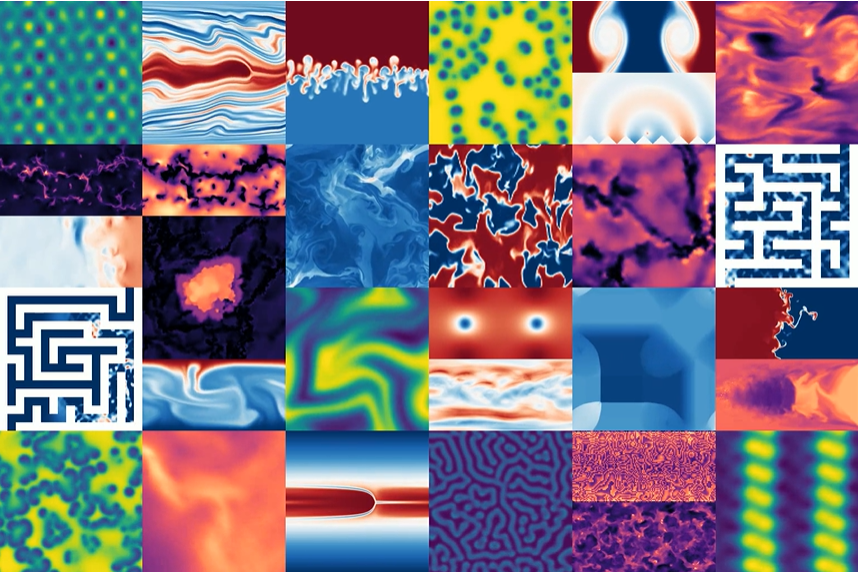

Доступные датасеты¶
Наш проект включает несколько наборов данных для различных задач машинного обучения и анализа.
Основной датасет¶
Этот датасет содержит ключевые метрики производительности за последние 5 лет.
| ID | Название | Размер | Формат | Дата обновления |
|---|---|---|---|---|
| 001 | Тренировочный набор | 5.2 GB | CSV | 2025-01-15 |
| 002 | Тестовый набор | 1.3 GB | CSV | 2025-01-15 |
| 003 | Валидационный набор | 0.8 GB | CSV | 2025-01-20 |
Пример данных¶
import pandas as pd
# Загрузка датасета
df = pd.read_csv('datasets/main_dataset.csv')
# Предобработка данных
df.fillna(0, inplace=True)
df['normalized_value'] = df['raw_value'] / df['max_value']
# Вывод первых 5 строк
print(df.head())
Визуализация распределения¶

Дополнительная информация¶
Датасет включает в себя следующие категории: - Временные ряды - Категориальные признаки - Числовые метрики
Для более подробной информации о структуре данных обратитесь к разделу Data Format.
Чтобы добавить изображение, создайте папку docs/assets/images/ и поместите туда файл data_distribution.png или другое изображение с соответствующим именем.